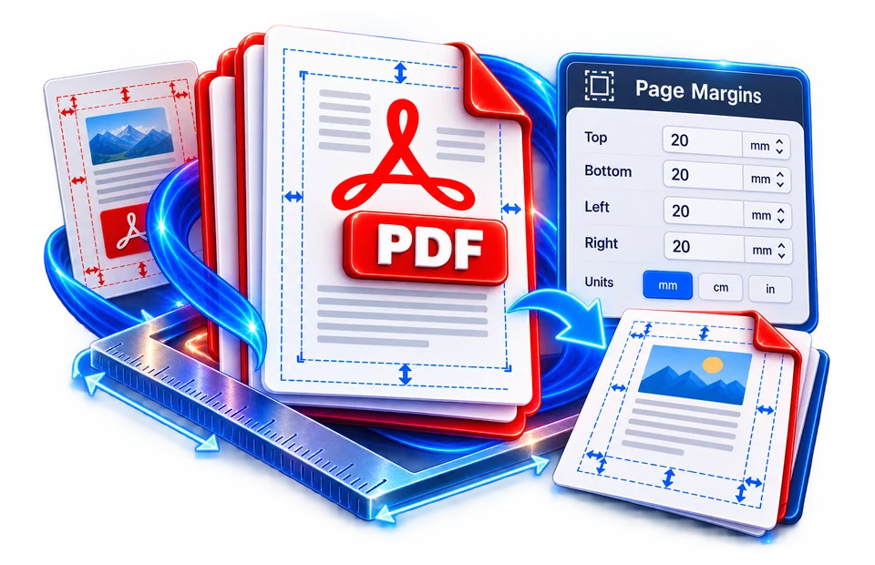

Open the page that needs extra whitespace
Add outer white space to a tightly cropped PDF, then preview it at the intended print size.
Add clean margins around PDF pages.
Adding extra white space changes page geometry, so text can become smaller when printed to fit the same physical paper.

Add outer white space to a tightly cropped PDF, then preview it at the intended print size.
Add printable whitespace around a document page.
Added margins may change the final printable paper size.
Add outer white space to a tightly cropped PDF, then preview it at the intended print size.
Adding whitespace around a filled A4 page can reduce the displayed content scale if the output must remain within the original sheet size. Check small text after adjustment.
Use the real tool above to verify the result. The example illustrates the workflow, not a guaranteed outcome.
Adding whitespace around a filled A4 page can reduce the displayed content scale if the output must remain within the original sheet size. Check small text after adjustment.
A larger margin does not increase source resolution. Confirm that stamps and footers are not pushed into printer-unfriendly areas.

Adding extra white space changes page geometry, so text can become smaller when printed to fit the same physical paper.
Adding extra white space changes page geometry, so text can become smaller when printed to fit the same physical paper.
Add outer white space to a tightly cropped PDF, then preview it at the intended print size.
Adding whitespace around a filled A4 page can reduce the displayed content scale if the output must remain within the original sheet size. Check small text after adjustment.
Adding margins to a PDF can help when a printer clips edges or a document needs space for notes, binding or punches. If an A4 document originally fills its page tightly, placing it inside a larger canvas or scaling it down can create visible white borders. This is different from cropping, which reduces the visible region, and from merely changing paper-size metadata. Determine whether the tool expands the page, scales existing content or both, because each choice affects the printed text size and final dimensions.
For a classroom handout, adding an outer margin may leave space for students to write comments. For a bound report, the inside margin may need to be larger than the outside margin so content is not hidden near the spine. A fixed equal margin on every side is often enough for informal use but not a full book-layout workflow. If the page already has a safe border, adding another wide one can reduce the usable text area unnecessarily. Preview the final result with a ruler or measurement grid where available.
Scaling an entire PDF page to make room for margins can shrink fonts, form fields and diagrams. A 10-point source font scaled to 85% appears roughly like 8.5-point text, which may be difficult to read in print. If the converter rasterizes the page first, very small text can also become blurred at lower rendering resolution. Test a densely populated page before applying the same margin setting to a long report. A margins operation cannot automatically reflow paragraphs as a word processor would.
Pages of mixed size or orientation deserve separate inspection. A portrait A4 page and a landscape A3 diagram can look awkward if the tool forces both onto one fixed canvas. Check whether blank border color is white or transparent and whether annotations remain in the expected location relative to the page. Digital signatures and interactive form fields may not survive every resizing strategy unchanged, so treat them as special cases.
After download, compare dimensions and page count using a PDF viewer. Print one test page at 100% scale or an explicitly chosen scaling rule, otherwise the printer may add its own shrink-to-fit operation on top of the margin adjustment. Check that content stays clear of hole punches, crop marks or binding areas. Preserve the unmodified original to adjust margins again for different printers or paper requirements. Margin addition is a layout change, not a security, OCR or compression tool.
If an A4 page is approximately 210 millimetres wide, adding 15 millimetres of white space on the left and right leaves 180 millimetres for content if the source is reflowed or scaled into that area. A PDF utility normally cannot reflow paragraphs the way a word processor can, so adding margins may instead enlarge the outer page or shrink the original artwork. Both change the print result. For a handwritten review copy, wider blank space is useful, but not if the core drawing becomes too small to read. Compare the exported physical page size and the final content scale before sending it to a print shop.
Adding space around a tightly cropped worksheet can make it easier to annotate or print, but a naive operation may scale the original page content down. That can turn already tiny footnotes into unreadable text. Decide whether you need more page canvas or less occupied area; these are different transformations. If a 210-mm-wide A4 page gains large margins, an image-based rescale can change text size and page proportions. Open the result at 100% viewing size and confirm that the added whitespace is consistent on all sides. Print a trial page before distributing documents with critical diagrams or barcodes.
Fitting a larger page area onto fixed paper can trigger automatic scaling.
Fitting the same original content into a smaller usable area can require downscaling it.
Yes. Existing numbers move with the original page content if the whole page is scaled or repositioned.
Some methods re-render the page as an image or add new page drawing streams.